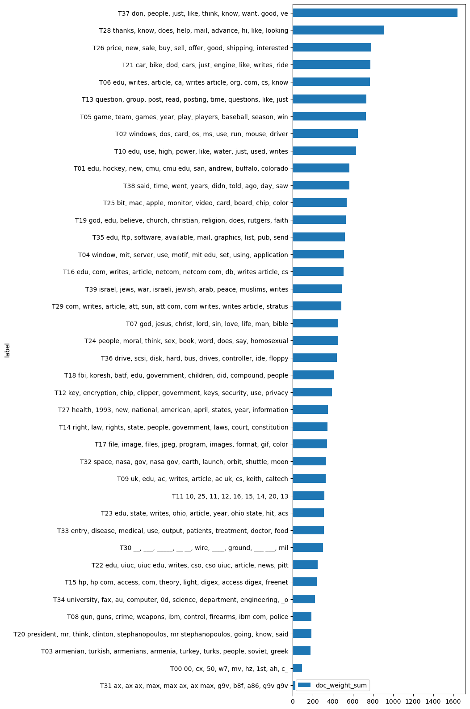

import pandas as pd
import numpy as np
from sklearn.feature_extraction.text import CountVectorizer
from sklearn.decomposition import LatentDirichletAllocation as LDA
import plotly_express as px
from glob import globn_topics = 20
import warnings
warnings.filterwarnings('ignore')ngram_range = (1, 2)
n_terms = 4000
n_topics = 40
max_iter = 20
n_top_terms = 9import configparser
config = configparser.ConfigParser()
config.read("../env.ini")
data_home = config['DEFAULT']['data_home']
output_dir = config['DEFAULT']['output_dir']
local_lib = config['DEFAULT']['local_lib']data_dir = f"{data_home}/newsgroups/20news-18828/"data = []
for dir in glob(f"{data_dir}/*"):
cat = dir.split('/')[-1]
for doc in glob(f"{dir}/*"):
text = open(doc, 'r', encoding="utf8", errors="ignore").read().split("\n")
doc_from = text[0]
doc_subj = text[1]
doc_str = " ".join(text[2:])
data.append((cat, doc, doc_from, doc_subj, doc_str))DOCS = pd.DataFrame(data, columns=['cat','file','from', 'subj', 'doc_str'])
DOCS.doc_str = DOCS.doc_str.str.replace(r"\s+", " ", regex=True)
DOCS['from'] = DOCS['from'].str.replace(r"^From: ", "", regex=True)
DOCS['subj'] = DOCS['subj'].str.replace(r"^Subject: ", "", regex=True) DOCS.to_csv(f"{output_dir}/newsgroups-corpus.csv")count_engine = CountVectorizer(max_features=n_terms, ngram_range=ngram_range, stop_words='english')
count_model = count_engine.fit_transform(DOCS.doc_str)
TERMS = count_engine.get_feature_names_out()VOCAB = pd.DataFrame(index=TERMS)
VOCAB.index.name = 'term_str'DTM = pd.DataFrame(count_model.toarray(), index=DOCS.index, columns=TERMS)VOCAB['doc_count'] = DTM.astype('bool').astype('int').sum()
DOCS['term_count'] = DTM.sum(1)DOCS.term_count.describe()count 18828.000000
mean 104.581262
std 427.003977
min 0.000000
25% 34.000000
50% 58.000000
75% 99.250000
max 24647.000000
Name: term_count, dtype: float64lda_engine = LDA(n_components=n_topics, max_iter=max_iter, learning_offset=50., random_state=0)TNAMES = [f"T{str(x).zfill(len(str(n_topics)))}" for x in range(n_topics)]lda_model = lda_engine.fit_transform(count_model)THETA = pd.DataFrame(lda_model, index=DOCS.index)
THETA.columns.name = 'topic_id'
THETA.columns = TNAMESPHI = pd.DataFrame(lda_engine.components_, columns=TERMS, index=TNAMES)
PHI.index.name = 'topic_id'
PHI.columns.name = 'term_str'TOPICS = PHI.stack().to_frame('topic_weight').groupby('topic_id')\
.apply(lambda x: x.sort_values('topic_weight', ascending=False)\
.head(n_top_terms).reset_index().drop('topic_id', axis=1)['term_str'])TOPICS.T| topic_id | T00 | T01 | T02 | T03 | T04 | T05 | T06 | T07 | T08 | T09 | ... | T30 | T31 | T32 | T33 | T34 | T35 | T36 | T37 | T38 | T39 |
|---|---|---|---|---|---|---|---|---|---|---|---|---|---|---|---|---|---|---|---|---|---|
| term_str | |||||||||||||||||||||
| 0 | 00 | edu | windows | armenian | window | game | edu | god | gun | uk | ... | __ | ax | space | entry | university | edu | drive | don | said | israel |
| 1 | cx | hockey | dos | turkish | mit | team | writes | jesus | guns | edu | ... | ___ | ax ax | nasa | disease | fax | ftp | scsi | people | time | jews |
| 2 | 50 | new | card | armenians | server | games | article | christ | crime | ac | ... | _____ | max | gov | medical | au | software | disk | just | went | war |
| 3 | w7 | cmu | os | armenia | use | year | ca | lord | weapons | writes | ... | __ __ | max ax | nasa gov | use | computer | available | hard | like | years | israeli |
| 4 | mv | cmu edu | ms | turkey | motif | play | writes article | sin | ibm | article | ... | wire | ax max | earth | output | 0d | bus | think | didn | jewish | |
| 5 | hz | san | use | turks | mit edu | players | org | love | control | ac uk | ... | ____ | g9v | launch | patients | science | graphics | drives | know | told | arab |
| 6 | 1st | andrew | run | people | set | baseball | com | life | firearms | cs | ... | ground | b8f | orbit | treatment | department | list | controller | want | ago | peace |
| 7 | ah | buffalo | mouse | soviet | using | season | cs | man | ibm com | keith | ... | ___ ___ | a86 | shuttle | doctor | engineering | pub | ide | good | day | muslims |
| 8 | c_ | colorado | driver | greek | application | win | know | bible | police | caltech | ... | mil | g9v g9v | moon | food | _o | send | floppy | ve | saw | writes |
9 rows × 40 columns
TOPICS['label'] = TOPICS.apply(lambda x: x.name + ' ' + ', '.join(x[:n_top_terms]), 1)TOPICS['doc_weight_sum'] = THETA.sum()
TOPICS['term_freq'] = PHI.sum(1) / PHI.sum(1).sum()TOPICS.sort_values('doc_weight_sum', ascending=True).plot.barh(y='doc_weight_sum', x='label', figsize=(5, n_topics/2));